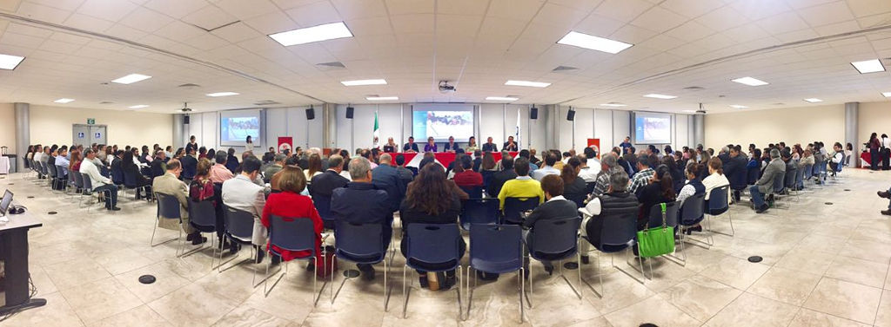
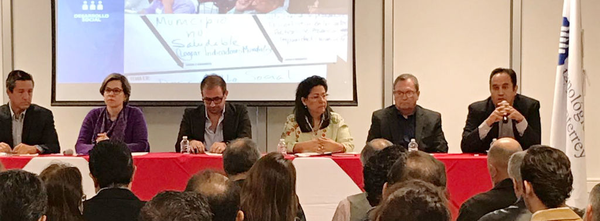

El Instituto Municipal de Planeación y Competitividad (IMPLAN) de Torreón, llevó a cabo este martes la presentación del Plan Estratégico para Torreón Enfoque Metropolitano (TRC2040), en las instalaciones del Instituto Tecnológico de Estudios Superiores de Monterrey (ITESM) Campus Laguna, con la asistencia de más de 200 personas, entre los que se encontraron ciudadanos representantes de distintos sectores de la sociedad, así como funcionarios públicos.
El director del IMPLAN, Eduardo Holguín Zehfuss, señaló que este proyecto es el resultado del esfuerzo de gobernanza, gobierno abierto y un ejercicio de participación ciudadana que se combina como la única forma en que se debe de gobernar.

Destacó la participación de 264 líderes, quienes trabajaron en la elaboración de este plan entre los que se encuentran representantes de los diversos sectores y estratos de la sociedad, como ecologistas, colectivos sociales, urbanistas, expertos en movilidad, empresarios, personas con discapacidad y profesionistas diversos.
Ellos se reunieron en cuatro talleres de 20 horas de duración, lo que significaron cinco mil horas–hombre de trabajo, que se ven reflejados en un completo documento que puede ser consultado en línea.

El funcionario, felicitó a la comunidad que participó en este gran esfuerzo en favor de la sociedad, de un mejoramiento cualitativo y cuantitativo de la calidad de vida de la ciudad y de la metrópoli, "dado que la competitividad de nuestra ciudad tiene que ver con lo que sucede en nuestras ciudades hermanas: Gómez Palacio, Lerdo y Matamoros".
Además, invitó a los ciudadanos a consultar el documento en línea y a enriquecerlo enviando sus comentarios en el apartado comentar del documento en línea.

También se realizó la presentación de un video como introducción al PLAN TRC2040 y un panel de expertos en los seis ejes que lo integran: Buen gobierno, Desarrollo Económico, Desarrollo Social, Entorno Urbano, Movilidad y Sustentabilidad.
Los especialistas encargados de esta ponencia fueron: Susana Estens de la Garza, directora de Medio Ambiente en el municipio, Cecilia Cardiel, Alberto Allegre, Guillermo Sandoval, Aldo Villarreal, Carlos Landeros y Luis García Abusaid.